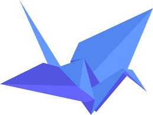
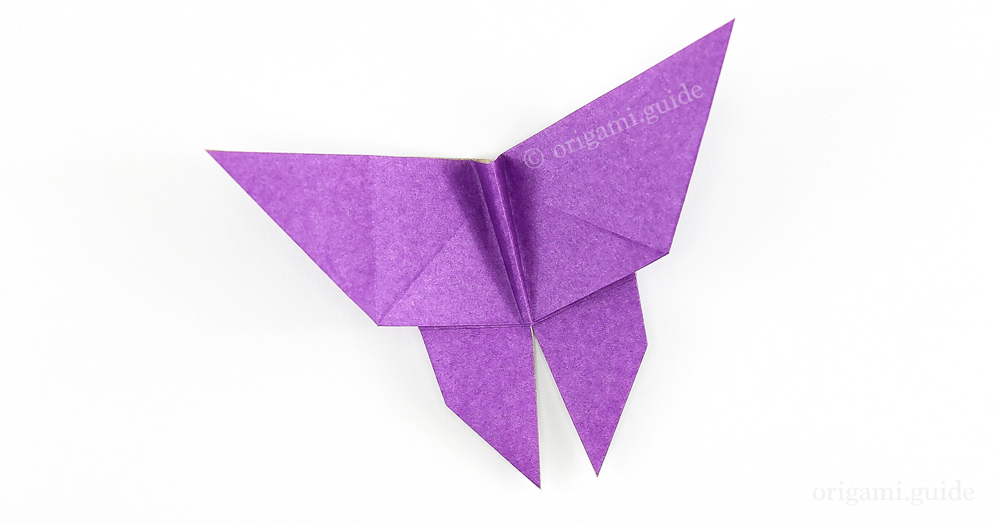
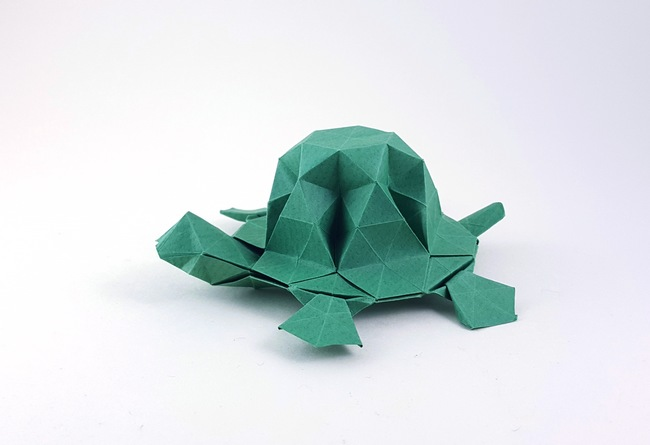
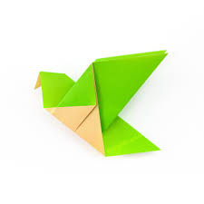

Origami Designs

Crane
- Cranes are a family, the Gruidae, of large, long-legged, and long-necked birds in the group Gruiformes.
- Cranes are powerful flyers, with some having the ability to fly over the Himalayas.
- Cranes form lifelong monogamous pair bonds.

Butterfly
- Butterfly wings are transparent.
- There are almost 20,000 butterfly species.
- Butterflies only live for a few weeks.
About Origami
Turtle
- Turtles are reptiles of the order Chelonia or Testudines.
- They are characterized by a special bony or cartilaginous shell developed from their ribs that acts as a shield.
- Colloquially, the word "turtle" is generally restricted to fresh-water and sea-dwelling Testudines.

Bird
- Ravens are great at mimicking human speech and sounds.
- Birds are a group of warm-blooded vertebrates
- Ostriches have the largest eyes of any land animal.
